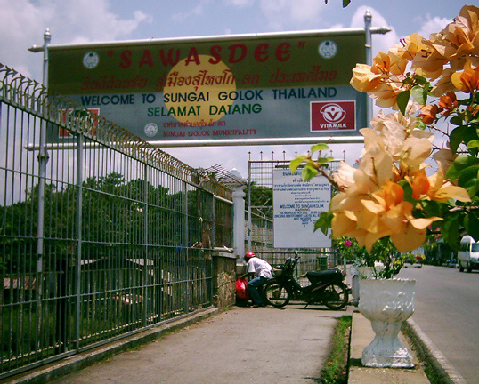
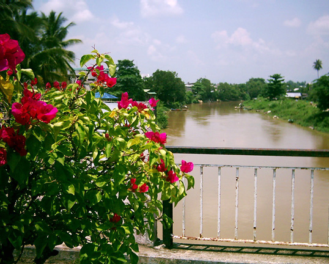
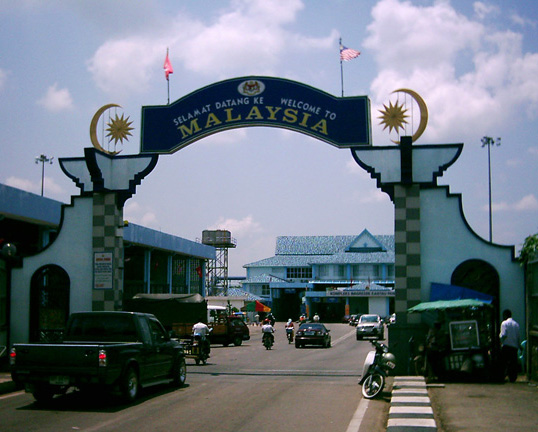
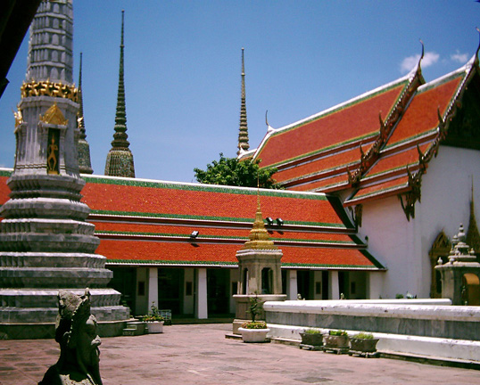
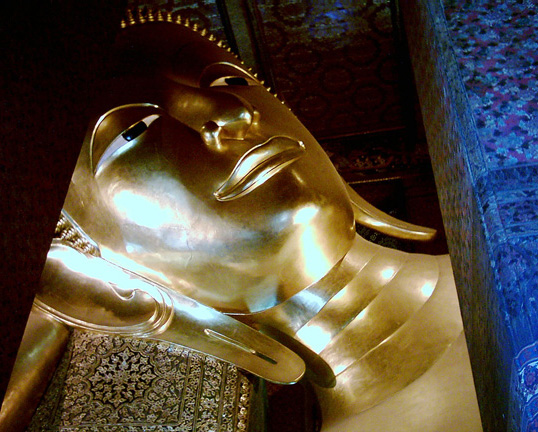
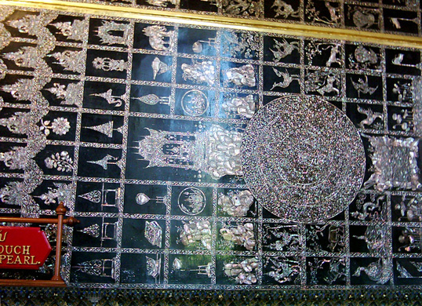
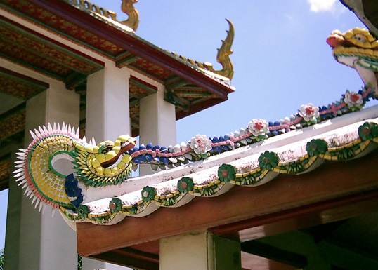
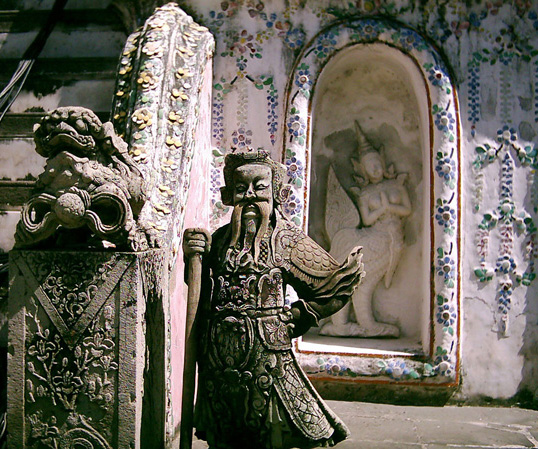

Thailand Trav-E-Logs©
| Return to Bangkok |  |
| back: Return to Perhentians | Avoiding customs at Sungai Golok, Thailand |
================================= Took local buses up the coast to Kota Bharu, spent a few days, then finally crossed back into Thailand at Sungai Golok, where a river separates the two countries. Just as in 1999, a cyclist was busy avoiding Thai Customs. But turning around and looking behind me also showed another couple on two motorbikes avoiding Malaysian customs too. Then walked the kilometer or two to the train station to continue my journey all the way to Bangkok. =================================
|
August 27 - 31, 2003 Upon arrival in Bangkok, tried to get a room in one of the Hotels nearer to the Chao Phraya River, but those were booked up. Started walking north, running into filled rooms everywhere. Ended up walking several miles north to a street off the map called Sri Ayuthaya, where the guidebook says more guesthouses are located. Nice area -- near a fish market, flower market, vegetable market, and convenience store. Bus stop down the block, National Library, Big Temple, University, and river ferry stop -- what could be better? The first place had an expensive attitude. The second place has a room -- a little small and dark, but I need a room! After spending a day there, decided the whole area was far superior to the Kao San Road nightmare. Still have not seen all the important and historical sights in Bangkok, so decided to do the tourist thing at the largest Wat in Bangkok, Wat Pho. Here is the largest reclining Buddha in Thailand, housed in an enormous building, and the entire image is covered in gold leaf. Impressive. It's really hard to get a photo of the entirety, so decided to go for a head shot between the pillars, and bottom of the feet, with 108 auspicious characteristics of Buddha inlaid with mother-of-pearl. Also photographed some colorful ornamentation along the roof. After Wat Pho, took a river ferry across to Wat Arun, seen every day you travel on the Chao Phraya. It doesn't have all the gold leaf found at Wat Pho, but never the less still a rather impressive monument with a generous supply of intricate carvings. First up is a guard next to a staircase. Also took photos of the main structure, and a half-bird, half-human figure that reminds me of carvings seen at Angkor. Didn't spend much time in Bangkok before hitting the road again, this time for Ayuthaya, the Siam Capital before Bangkok. Enjoy! Bill ------------------------------ Email me at the juno.com address "dancer2SEAsia" "Travel is Fatal to Bigotry, Prejudice, and Narrow-minded ness" .... attributed to Mark Twain |
       |
| next: Ayuthaya |
| back: Return to Perhentians |